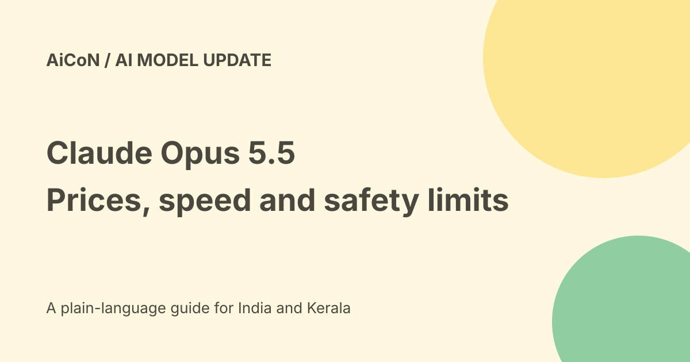

Claude Opus 5.5: API prices, faster output and safety limits
Anthropic introduced Claude Opus 5.5 on 22 September 2026. It says the model can match Fable 5.1 on much of its work while costing less to run than Opus 5. The headline 40% saving is a vendor workload result, not a guaranteed discount on every project or Claude subscription.

What is new?
Anthropic calls Opus 5.5 the first release of the Claude 5.5 family, with improvements in agentic coding, computer use and knowledge work.
The company says it generates output more than 30% faster than Opus 5. Actual task time also includes tools, retries, network waits and review. A faster text stream does not guarantee a faster or correct finished job.
Standard API prices
The launch lists these prices per one million tokens. Tokens are pieces of text, not complete requests.
| Usage | USD per million | Approximate INR |
|---|---|---|
| Input | $4 | Rs 386 |
| Output | $20 | Rs 1,929 |
| Cache reads | $0.20 | Rs 19.29 |
| Cache writes | $5 | Rs 482 |
INR estimates use the checked Wise mid-market rate of Rs 96.47 per US dollar on 7 October 2026. Taxes, bank conversion, provider markups and related tools are not included. These are not an Indian checkout quote.
Fast mode costs more
The launch says fast mode is available in Claude Code and the Claude Platform, with up to 2.5 times the speed. Its prices are $8 input and $40 output per million tokens, roughly Rs 772 and Rs 3,859 at the same rate.
Choose speed deliberately. Do not assume fast mode keeps standard pricing. Check any other charges and the current mode in your actual integration.
Why 40% and 20% both appear
Standard input and output token prices are 20% below Opus 5. Cache reads fall from $0.50 to $0.20 per million, a 60% reduction.
Anthropic's typical-workload claim combines token prices and using fewer tokens. That is how its 40% task-cost claim differs from the 20% input/output price cut. Your prompt, cache reuse, tool calls and retries can produce a different result.
Subscriptions are separate
The announcement says Pro, Max and Team receive higher five-hour usage limits, plus a rate-limit reset that subscription users can save.
That is not proof of unlimited use or an API allowance included in a subscription. Check your plan and model selector. No personal account quota or INR subscription total was inspected.
Benchmarks and safety claims
Anthropic reports better results on its own behavioural audit, fewer hard-to-reverse actions and stronger resistance to malicious instructions. It also names external prerelease evaluators including Frontier Design and METR.
Those claims do not mean the model cannot be misled or that all evaluation figures are independent. The launch notes benchmark setup differences and uncertainty. Keep approval checks for messages, purchases, account changes and sensitive disclosures.
Access and model identifier
The announcement says Opus 5.5 is available across platforms, including AWS, Google Cloud and Microsoft Azure, with claude-opus-5-5 on the Claude Platform.
Availability at the platform level does not establish your account, region, quota or negotiated terms. Partner billing and deployment requirements can differ from Anthropic's direct API.
A safe comparison test
- Use one small task with a clear success condition.
- Remove passwords and unnecessary private information.
- Run the same input on the models you are comparing.
- Record output quality, tool use and actual billed tokens.
- Separate standard and fast mode.
- Count failed retries and review time.
- Check code or citations before relying on them.
- Set a spending cap before larger runs.
Specialised-work safeguards
The release describes biology and cybersecurity safeguards and verification programmes. It also mentions preserved thinking and no longer offering a switched-off thinking mode for this model.
Read current documentation before changing an integration. Do not treat model access as permission to bypass controls or send regulated data.
What changed since the original post?
We separate task savings from token price cuts, include cache-write and fast-mode prices and label INR estimates. Sonnet and Haiku 5.5 were announced as following later; this guide does not assume they launched merely because weeks have passed.
Frequently asked questions
Is every task 40% cheaper?
No. It is Anthropic's tested workload claim.
Is fast mode the same price?
No. The listed input and output prices double.
Was a billed account tested?
No.
Sources: Official Opus 5.5 launch and price table · Checked USD to INR reference. Checked 7 October 2026.